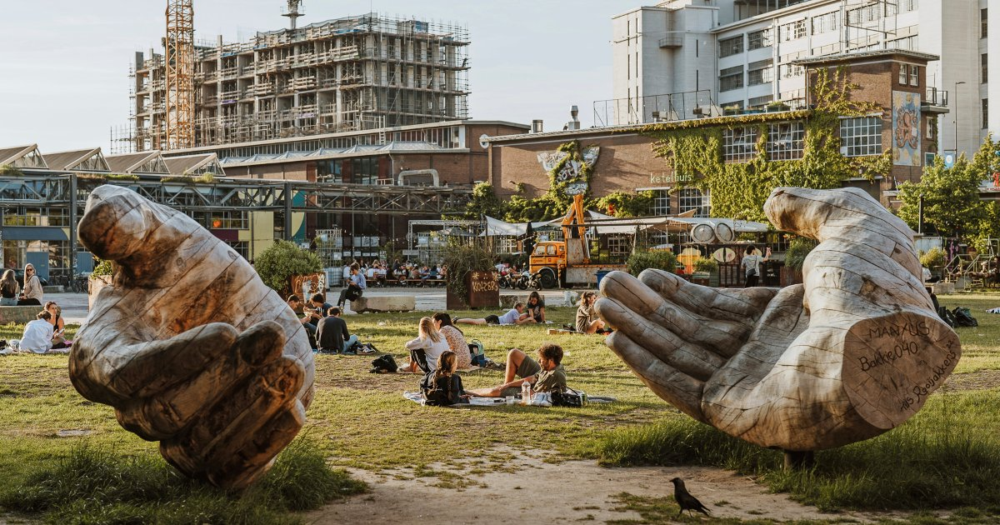
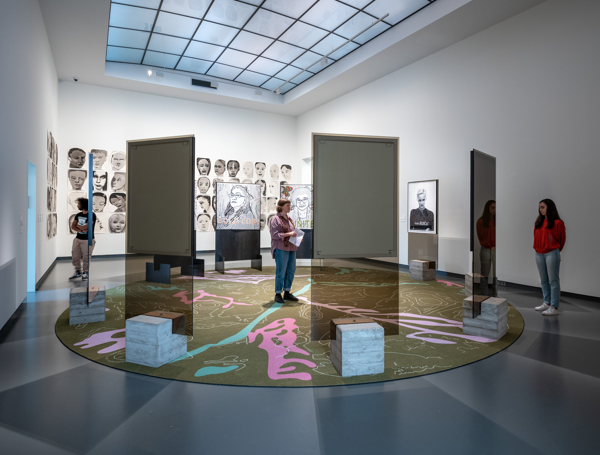
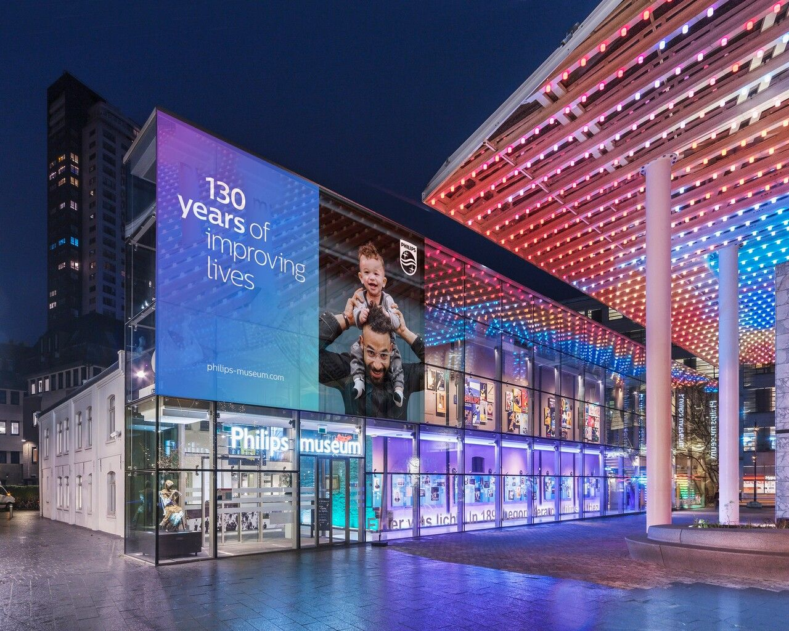
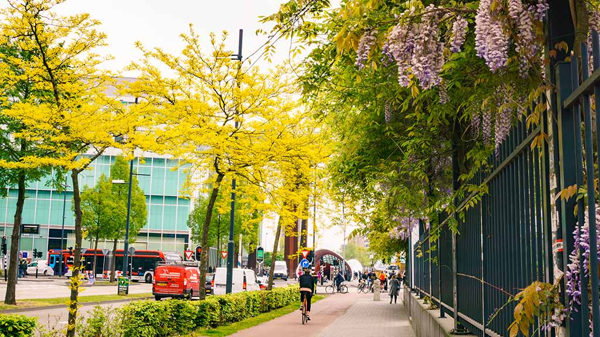
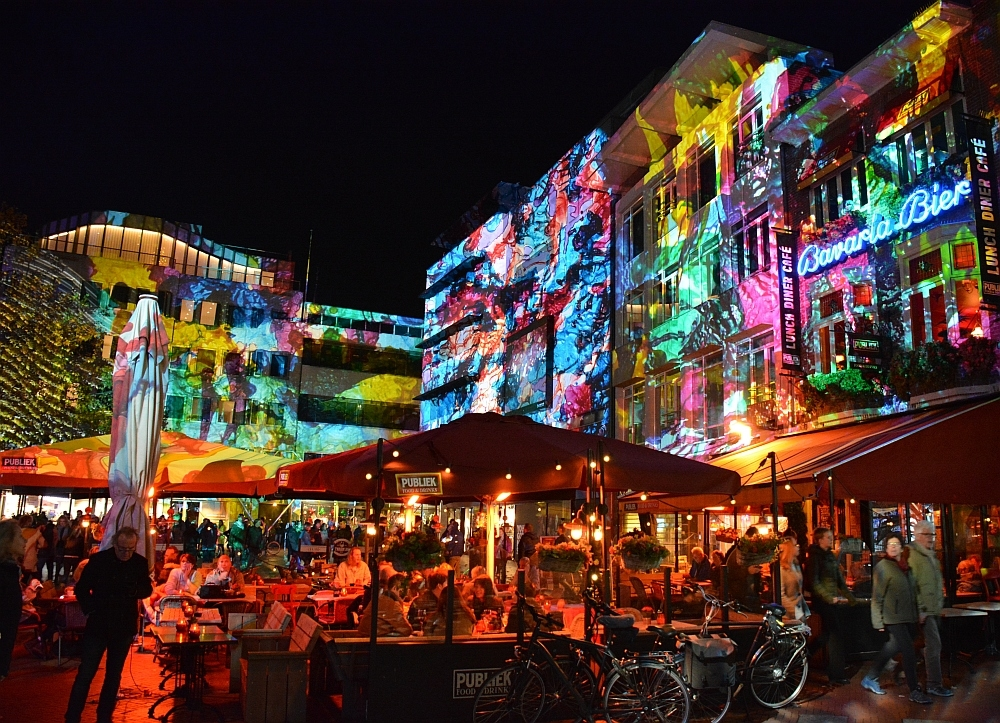
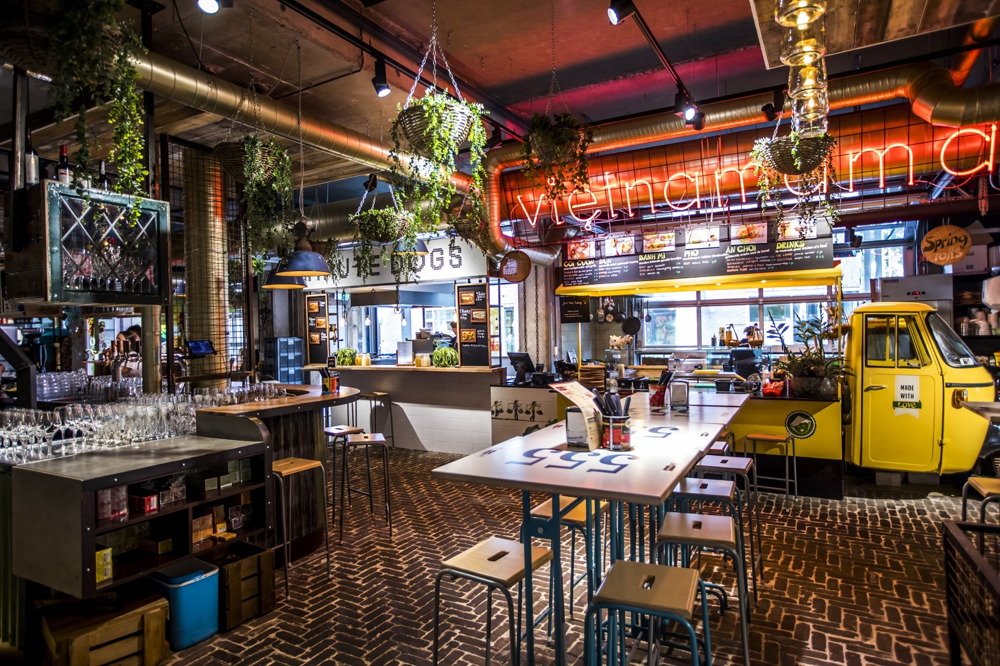
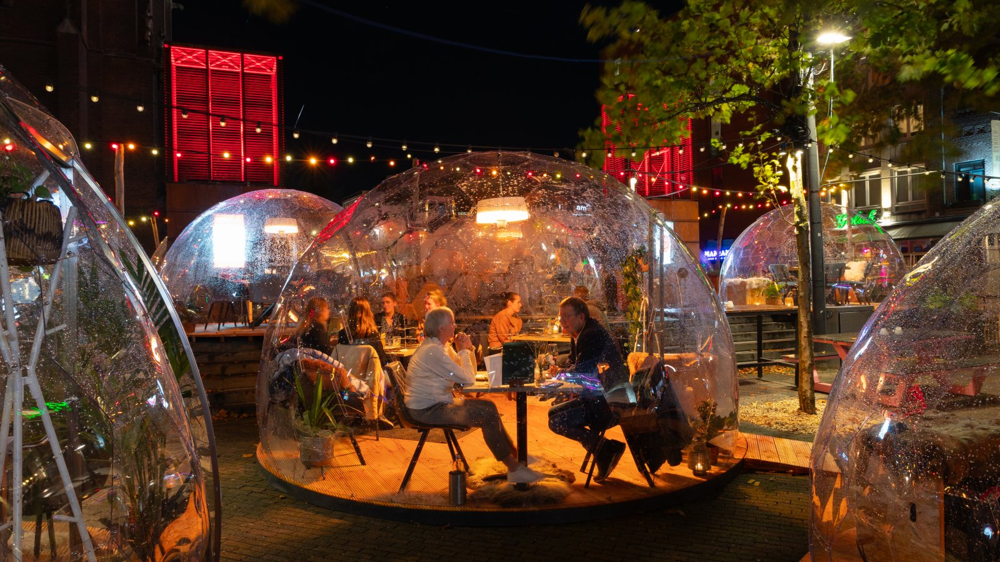
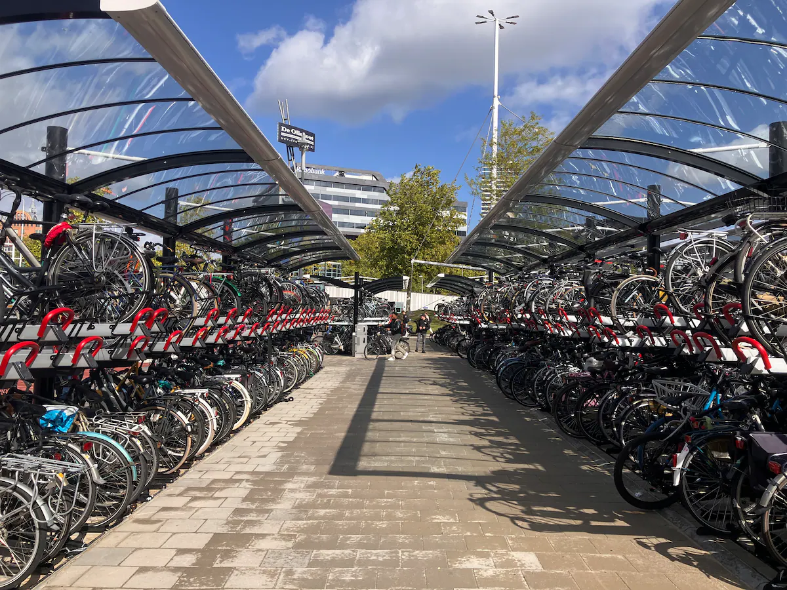
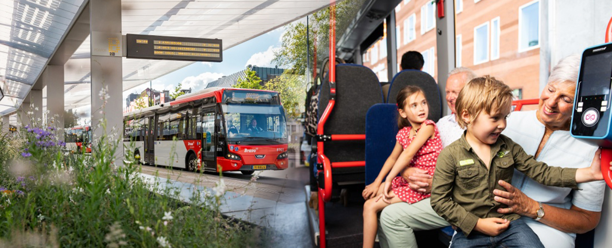

For Tourists Explore Eindhoven's Best Attractions Θ
Must See Attractions
Van Abbemuseum
- Modern and contemporary art
- Open: Tue-Sun 11:00-17:00
Strijp-S
- Creative industrial area
- Unique shops and cafes
Philips Museum
- History of the electronics company



City attractions & culture ®
Ready-Made Itineraries
One-Day City Tour
- Morning: Van Abbemuseum
- Afternoon: Strijp-S
Weekend Trip
- Day 1: Museums & galleries
- Day 2: Parks and local life


Tour itineraries Φ
Food & Drinks
Local Cuisine
- Traditional Dutch restaurants
- Street food markets
Budget Options
- Affordable food trucks
- Student-friendly cafes


Dining & nightlife ©
Getting Around
Public Transport
- Extensive bus routes
- Day tickets: €7.10
Bike & Walking
- Bike rental locations
- Walking tour maps


Transport options ™